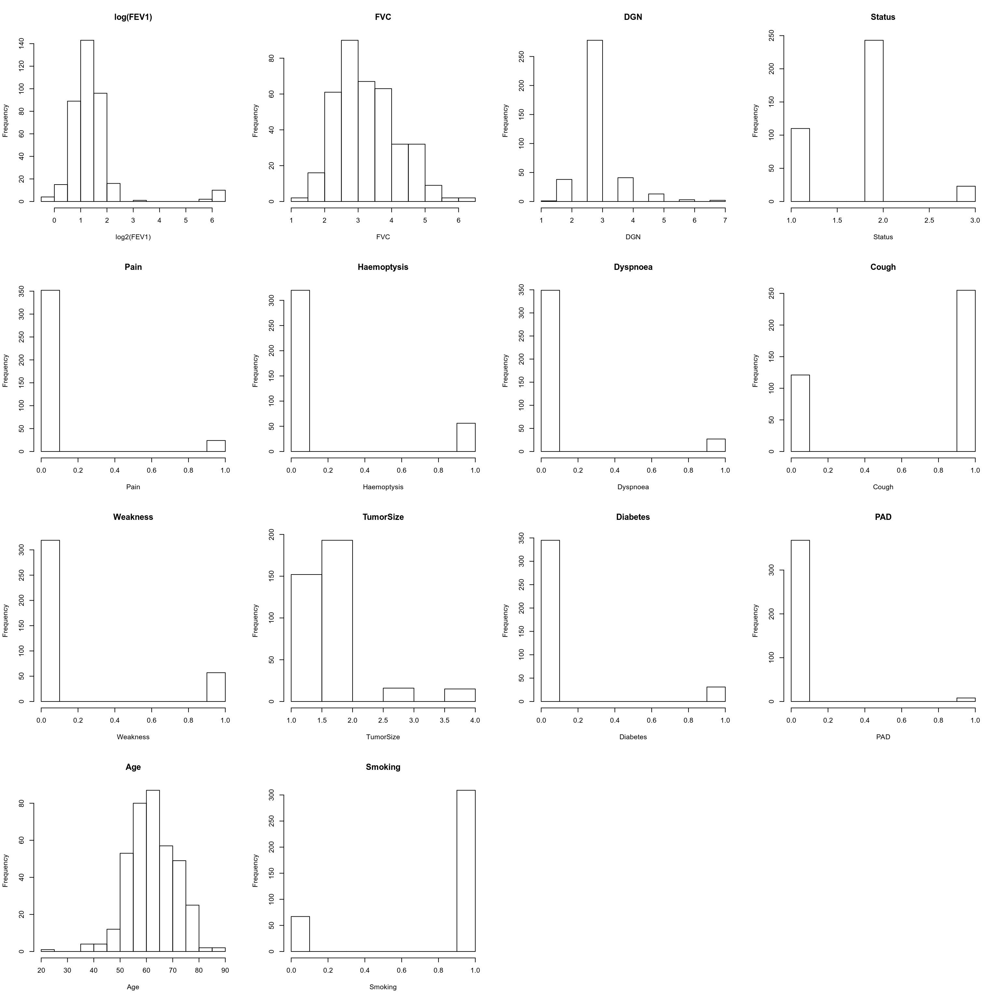
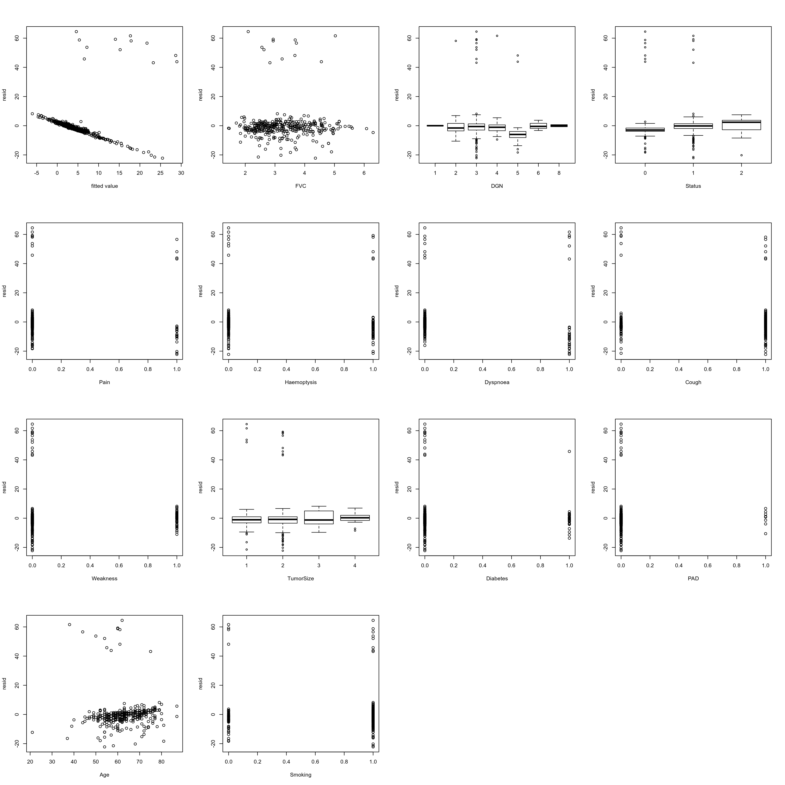
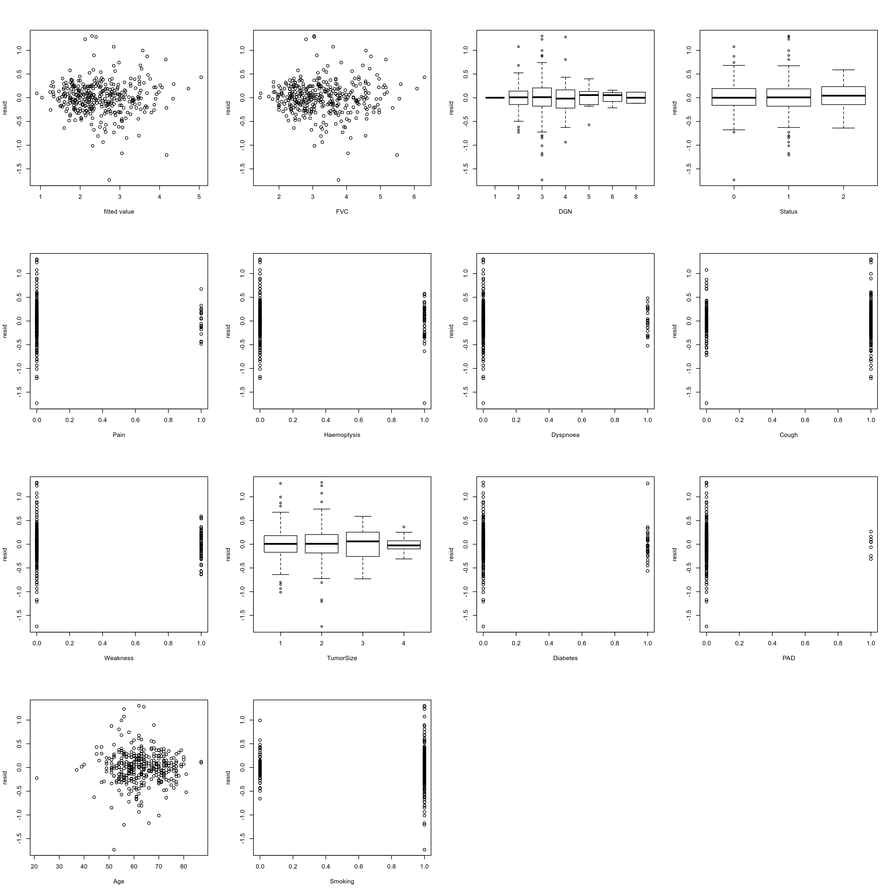
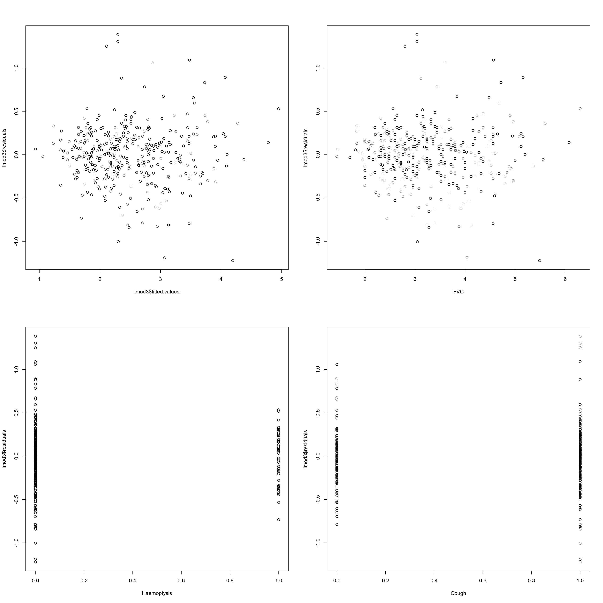
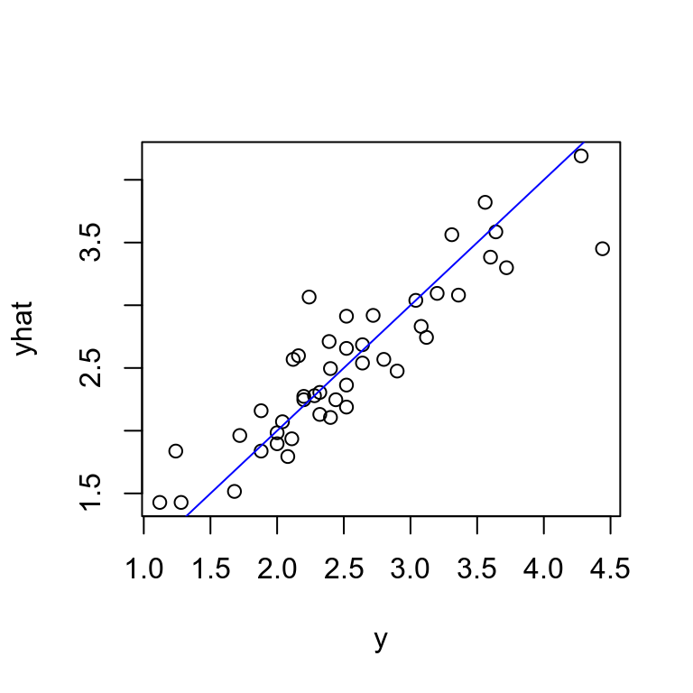
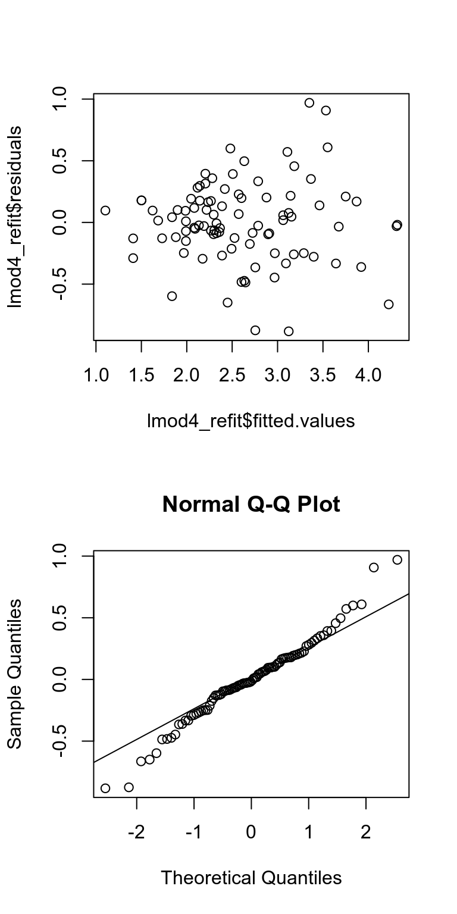
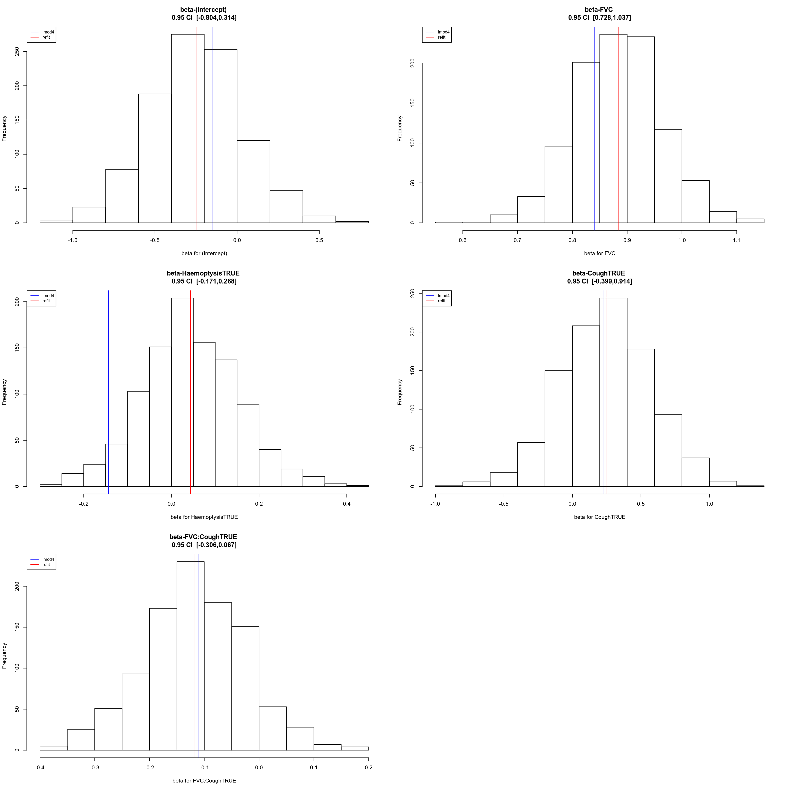

Last updated: 2020-12-21
Checks: 7 0
Knit directory: statsNotes/
This reproducible R Markdown analysis was created with workflowr (version 1.6.0). The Checks tab describes the reproducibility checks that were applied when the results were created. The Past versions tab lists the development history.
Great! Since the R Markdown file has been committed to the Git repository, you know the exact version of the code that produced these results.
Great job! The global environment was empty. Objects defined in the global environment can affect the analysis in your R Markdown file in unknown ways. For reproduciblity it’s best to always run the code in an empty environment.
The command set.seed(20200505) was run prior to running the code in the R Markdown file. Setting a seed ensures that any results that rely on randomness, e.g. subsampling or permutations, are reproducible.
Great job! Recording the operating system, R version, and package versions is critical for reproducibility.
Nice! There were no cached chunks for this analysis, so you can be confident that you successfully produced the results during this run.
Great job! Using relative paths to the files within your workflowr project makes it easier to run your code on other machines.
Great! You are using Git for version control. Tracking code development and connecting the code version to the results is critical for reproducibility. The version displayed above was the version of the Git repository at the time these results were generated.
Note that you need to be careful to ensure that all relevant files for the analysis have been committed to Git prior to generating the results (you can use wflow_publish or wflow_git_commit). workflowr only checks the R Markdown file, but you know if there are other scripts or data files that it depends on. Below is the status of the Git repository when the results were generated:
Ignored files:
Ignored: .Rproj.user/
Ignored: analysis/importance_sampling.html
Untracked files:
Untracked: .idea/
Untracked: analysis/test_jb.Rmd
Untracked: data/thoracic.txt
Untracked: statsNotes.iml
Unstaged changes:
Modified: analysis/stat343_summary.Rmd
Note that any generated files, e.g. HTML, png, CSS, etc., are not included in this status report because it is ok for generated content to have uncommitted changes.
These are the previous versions of the R Markdown and HTML files. If you’ve configured a remote Git repository (see ?wflow_git_remote), click on the hyperlinks in the table below to view them.
| File | Version | Author | Date | Message |
|---|---|---|---|---|
| Rmd | e5cced9 | zihao12 | 2020-12-21 | stat343 final project |
It’s the final project for STAT343@UChicago. We use the data set Thoracic. This data set contains data from patients who underwent lung surgery as treatment for lung cancer. The goal is to build a model to predict FEV1 with potentially all other covariates.
knitr::opts_chunk$set(message = FALSE, warning = FALSE, fig.width=16, fig.height=16)
library(MASS)
library(faraway)
set.seed(666)tarin (80%), val (10%), test (10%). We will run linear regression on train, evaluate my each step on val, and finally report model performance on test.training data cover all rare situations. But it turns out splitting by random ordering fortunately works.MI and Asthma covariates, as each only has 2 TRUE. Therefore they contain too little information in this dataset, and most likely we won’t see them in test or val. We need more data in order to have a meaningful study of their correlation with the response.Status and TumorSize are supposed to be ordinal variables. We used factor(..., ordered = TRUE) at first, but found lm has a rather complicated way of dealing with them (fitting linear, quadratic and even cubic for them). We end up simply fitting them as unordered factor variable, as they don’t seem to be very important anyways.data_whole = read.table("data/thoracic.txt", header = TRUE)
#head(data_whole)
dim(data_whole)[1] 470 16n0 = nrow(data_whole)
data_whole$DGN = factor(data_whole$DGN)
data_whole$Status = factor(data_whole$Status)
data_whole$TumorSize = factor(data_whole$TumorSize)
## there are two few data points for these two covariates if we want to do prediction
data_whole$Asthma <- NULL
data_whole$MI <- NULL
id_shuffled = sample(x = 1:n0,size = n0, replace = FALSE)
n_train = round(0.8*n0)
n_val = round(0.1*n0)
train_id = id_shuffled[1:n_train]
val_id = id_shuffled[(n_train + 1):(n_train + n_val)]
test_id = id_shuffled[(n_train + n_val + 1):n0]
data = data_whole[train_id,]
val = data_whole[val_id,]
test = data_whole[test_id,]
n = nrow(data)Function to do prediction. Loss is average sum of squares.
prediction <- function(model, data, idx){
y = data[idx,"FEV1"]
yhat = predict(model, newdata = data[idx, names(model$model)[-1]])
loss = mean((y - yhat)^2)
return(loss)
}Look at the distributions of y and covariates.
par(mfrow = c(4,4))
for(name in colnames(data)){
if(name == "FEV1"){
hist(log2(data[,name]), xlab = sprintf("log2(%s)", name), main = sprintf("log(%s)", name))
}else{
hist(as.numeric(data[, name]), xlab = name, main = name)
}
}
FEV1 have some suspiciously large values, way outside the range of other normal-shaped values.y and those covariates.lmod0par(mfrow = c(4,4))
lmod0 = lm(FEV1 ~ ., data = data)
summary(lmod0)
Call:
lm(formula = FEV1 ~ ., data = data)
Residuals:
Min 1Q Median 3Q Max
-22.233 -3.335 -0.885 1.154 64.480
Coefficients:
Estimate Std. Error t value Pr(>|t|)
(Intercept) 16.56057 12.62772 1.311 0.190557
FVC -0.07325 0.71303 -0.103 0.918237
DGN2 3.17207 11.35438 0.279 0.780125
DGN3 2.10720 11.19763 0.188 0.850841
DGN4 3.75742 11.29690 0.333 0.739629
DGN5 10.00685 11.61415 0.862 0.389486
DGN6 3.95879 12.94151 0.306 0.759862
DGN8 -1.22661 13.72487 -0.089 0.928837
Status1 -5.69283 1.99251 -2.857 0.004528 **
Status2 -7.67348 3.52102 -2.179 0.029966 *
PainTRUE 9.96965 2.53922 3.926 0.000104 ***
HaemoptysisTRUE 2.19643 1.74171 1.261 0.208111
DyspnoeaTRUE 11.64939 2.34416 4.970 1.05e-06 ***
CoughTRUE 2.95482 1.91499 1.543 0.123724
WeaknessTRUE 0.81922 1.90662 0.430 0.667697
TumorSize2 0.41213 1.24703 0.330 0.741226
TumorSize3 -4.99710 3.02354 -1.653 0.099272 .
TumorSize4 -1.63780 3.16647 -0.517 0.605318
DiabetesTRUE 0.09249 2.14853 0.043 0.965688
PADTRUE -3.97749 4.07803 -0.975 0.330054
Age -0.21573 0.07358 -2.932 0.003589 **
SmokingTRUE -0.51932 1.57593 -0.330 0.741948
---
Signif. codes: 0 '***' 0.001 '**' 0.01 '*' 0.05 '.' 0.1 ' ' 1
Residual standard error: 11.1 on 354 degrees of freedom
Multiple R-squared: 0.183, Adjusted R-squared: 0.1346
F-statistic: 3.777 on 21 and 354 DF, p-value: 9.753e-08plot(lmod0$fitted.values, lmod0$residuals, xlab = "fitted value", ylab = "resid")
for(name in colnames(data)[2:ncol(data)]){
plot(data[[name]], lmod0$residuals, xlab = name, ylab = "resid")
}
Clearly there are many issues
Let’s first focus on the data points that have hige residuals.
idx = which(lmod0$residuals > 20)
## look at the `y` values for those with huge residuals
data[idx,"FEV1"] [1] 76.8 69.1 72.8 67.3 60.9 79.3 78.3 66.4 73.3 52.3 76.0 64.1## look at the quantile of `y` in the training data
quantile(data$FEV1, probs = seq(0.9,1,0.01)) 90% 91% 92% 93% 94% 95% 96% 97% 98% 99% 100%
3.770 3.890 3.960 4.115 4.195 4.380 4.920 41.365 66.850 73.975 79.300 FEV1. Judge by commonsense, these values are indeed too strange.15 such data points, so the model may be severely influenced by them. Let’s try robust regression method like huber and see if the result also tells us these data points are outliers.lmod_huber = rlm(FEV1 ~ ., data = data)
quantile(lmod_huber$residuals) 0% 25% 50% 75% 100%
-1.864133443 -0.193863965 0.001393448 0.180105777 75.248556954 lmod_huber$residuals[data$FEV1 > 6] 439 320 26 99 445 216 326 256
73.848668 67.412404 69.214465 65.228652 58.817757 6.607799 75.123319 75.248557
90 353 354 331 113
64.217510 70.987518 49.741658 73.729588 61.204203 y (> 6, the top 4%).y not too big.lmod1 with big outliers removedpar(mfrow = c(4,4))
data_sub = data[data$FEV1 < 6, ]
val = val[val$FEV1 < 6,]
test = test[test$FEV1 < 6,]
n1 = nrow(data_sub)
rownames(data_sub) = 1:nrow(data_sub)
lmod1 = lm(FEV1 ~ ., data = data_sub)
summary(lmod1)
Call:
lm(formula = FEV1 ~ ., data = data_sub)
Residuals:
Min 1Q Median 3Q Max
-1.73265 -0.17642 0.00838 0.19287 1.30186
Coefficients:
Estimate Std. Error t value Pr(>|t|)
(Intercept) 0.127892 0.404170 0.316 0.751869
FVC 0.762519 0.022963 33.207 < 2e-16 ***
DGN2 0.185479 0.361801 0.513 0.608525
DGN3 0.139718 0.356651 0.392 0.695487
DGN4 0.210806 0.359828 0.586 0.558362
DGN5 0.115586 0.372277 0.310 0.756383
DGN6 0.173169 0.412181 0.420 0.674655
DGN8 0.015805 0.437173 0.036 0.971182
Status1 0.067134 0.069613 0.964 0.335536
Status2 0.086436 0.116698 0.741 0.459398
PainTRUE 0.089996 0.090306 0.997 0.319681
HaemoptysisTRUE -0.197378 0.057038 -3.460 0.000608 ***
DyspnoeaTRUE -0.032550 0.081742 -0.398 0.690725
CoughTRUE -0.129201 0.066354 -1.947 0.052337 .
WeaknessTRUE -0.064584 0.060940 -1.060 0.289984
TumorSize2 -0.023913 0.040379 -0.592 0.554104
TumorSize3 -0.156401 0.096948 -1.613 0.107614
TumorSize4 -0.011002 0.101061 -0.109 0.913375
DiabetesTRUE 0.010965 0.069759 0.157 0.875196
PADTRUE 0.089332 0.130349 0.685 0.493604
Age -0.002081 0.002410 -0.864 0.388468
SmokingTRUE -0.072533 0.051464 -1.409 0.159631
---
Signif. codes: 0 '***' 0.001 '**' 0.01 '*' 0.05 '.' 0.1 ' ' 1
Residual standard error: 0.3535 on 341 degrees of freedom
Multiple R-squared: 0.8044, Adjusted R-squared: 0.7924
F-statistic: 66.8 on 21 and 341 DF, p-value: < 2.2e-16plot(lmod1$fitted.values, lmod1$residuals, xlab = "fitted value", ylab = "resid")
for(name in colnames(data)[2:ncol(data)]){
plot(data_sub[,name], lmod1$residuals, xlab = name, ylab = "resid")
}
## prediction error on training data
prediction(lmod1, data = data_sub, idx = which(data_sub$FEV1<6))[1] 0.117402## prediction error on validation data
prediction(lmod1, data = val, idx = which(val$FEV1<6))[1] 0.1381653
train and val tells us the model overfits a bit. So we will make the model smaller.lmod2## check leverage
X = model.matrix(lmod1)
H = (X %*% solve(t(X) %*% X, t(X)))
lev = diag(H)
sort(lev, decreasing = TRUE)[1:5] 170 86 107 93 285
1.0000000 0.5047272 0.5047272 0.3689821 0.3635427 ## check leverage
stud <- rstudent(lmod1)
sort_stud = sort(abs(stud), index.return = TRUE, decreasing = TRUE)
sort_stud$x[1:5] 127 181 331 25 140
5.202769 3.826491 3.772925 3.570907 3.526011 ## threshold for outlier
qt(p = 0.05/(n1*2), df = n1 - ncol(X) - 1)[1] -3.8561771. Since it’s only 2 data points, I will remove them.par(mfrow = c(4,4))
id_rm = c(which.max(abs(stud)),
sort(lev, index.return = TRUE, decreasing = TRUE)$ix[1])
data_sub2 = data_sub[-id_rm,]
n2 = nrow(data_sub2)
rownames(data_sub2) = 1:n2
lmod2 = lm(FEV1 ~ ., data = data_sub2)
## prediction error on training data
prediction(lmod2, data = data_sub2, idx = which(data_sub2$FEV1<6))[1] 0.1093468## prediction error on validation data, only look at "right" data points"
prediction(lmod2, data = val, idx = which(val$FEV1<6))[1] 0.1346705train and val suggests we need to make the model smaller for better generalization.lmod3summary(lm(...)).step function.lmod3 = step(lmod2, direction = "backward", trace = TRUE)Start: AIC=-756.98
FEV1 ~ FVC + DGN + Status + Pain + Haemoptysis + Dyspnoea + Cough +
Weakness + TumorSize + Diabetes + PAD + Age + Smoking
Df Sum of Sq RSS AIC
- DGN 5 0.217 39.691 -765.00
- TumorSize 3 0.277 39.751 -760.45
- Status 2 0.083 39.558 -760.22
- Diabetes 1 0.003 39.477 -758.95
- Dyspnoea 1 0.039 39.513 -758.62
- PAD 1 0.047 39.521 -758.55
- Pain 1 0.089 39.563 -758.16
- Weakness 1 0.140 39.614 -757.70
- Age 1 0.163 39.637 -757.49
- Smoking 1 0.179 39.653 -757.34
<none> 39.474 -756.98
- Cough 1 0.560 40.034 -753.90
- Haemoptysis 1 0.864 40.338 -751.16
- FVC 1 138.738 178.212 -214.83
Step: AIC=-765
FEV1 ~ FVC + Status + Pain + Haemoptysis + Dyspnoea + Cough +
Weakness + TumorSize + Diabetes + PAD + Age + Smoking
Df Sum of Sq RSS AIC
- TumorSize 3 0.271 39.962 -768.54
- Status 2 0.103 39.794 -768.06
- Diabetes 1 0.002 39.693 -766.98
- PAD 1 0.041 39.732 -766.63
- Dyspnoea 1 0.050 39.742 -766.54
- Pain 1 0.070 39.761 -766.36
- Age 1 0.132 39.823 -765.80
- Smoking 1 0.159 39.851 -765.55
- Weakness 1 0.160 39.851 -765.55
<none> 39.691 -765.00
- Cough 1 0.599 40.291 -761.58
- Haemoptysis 1 0.845 40.536 -759.39
- FVC 1 145.092 184.784 -211.76
Step: AIC=-768.54
FEV1 ~ FVC + Status + Pain + Haemoptysis + Dyspnoea + Cough +
Weakness + Diabetes + PAD + Age + Smoking
Df Sum of Sq RSS AIC
- Status 2 0.100 40.063 -771.63
- Diabetes 1 0.007 39.969 -770.48
- Pain 1 0.031 39.994 -770.26
- PAD 1 0.047 40.010 -770.11
- Dyspnoea 1 0.084 40.047 -769.78
- Age 1 0.129 40.092 -769.37
- Smoking 1 0.155 40.117 -769.14
- Weakness 1 0.163 40.126 -769.07
<none> 39.962 -768.54
- Cough 1 0.665 40.628 -764.58
- Haemoptysis 1 0.788 40.751 -763.49
- FVC 1 145.942 185.904 -215.58
Step: AIC=-771.63
FEV1 ~ FVC + Pain + Haemoptysis + Dyspnoea + Cough + Weakness +
Diabetes + PAD + Age + Smoking
Df Sum of Sq RSS AIC
- Diabetes 1 0.007 40.070 -773.57
- PAD 1 0.051 40.114 -773.17
- Dyspnoea 1 0.075 40.138 -772.96
- Pain 1 0.084 40.147 -772.87
- Weakness 1 0.112 40.175 -772.62
- Age 1 0.128 40.191 -772.48
- Smoking 1 0.144 40.207 -772.34
<none> 40.063 -771.63
- Haemoptysis 1 0.777 40.840 -766.70
- Cough 1 0.814 40.877 -766.37
- FVC 1 145.922 185.985 -219.42
Step: AIC=-773.57
FEV1 ~ FVC + Pain + Haemoptysis + Dyspnoea + Cough + Weakness +
PAD + Age + Smoking
Df Sum of Sq RSS AIC
- PAD 1 0.052 40.121 -775.11
- Dyspnoea 1 0.076 40.146 -774.88
- Pain 1 0.085 40.155 -774.81
- Weakness 1 0.109 40.179 -774.59
- Age 1 0.125 40.195 -774.45
- Smoking 1 0.151 40.221 -774.21
<none> 40.070 -773.57
- Haemoptysis 1 0.777 40.847 -768.64
- Cough 1 0.809 40.879 -768.35
- FVC 1 147.019 187.089 -219.28
Step: AIC=-775.11
FEV1 ~ FVC + Pain + Haemoptysis + Dyspnoea + Cough + Weakness +
Age + Smoking
Df Sum of Sq RSS AIC
- Dyspnoea 1 0.063 40.185 -776.54
- Pain 1 0.077 40.199 -776.41
- Weakness 1 0.107 40.228 -776.15
- Age 1 0.120 40.241 -776.03
- Smoking 1 0.140 40.261 -775.85
<none> 40.121 -775.11
- Haemoptysis 1 0.747 40.868 -770.45
- Cough 1 0.820 40.941 -769.80
- FVC 1 146.969 187.090 -221.28
Step: AIC=-776.54
FEV1 ~ FVC + Pain + Haemoptysis + Cough + Weakness + Age + Smoking
Df Sum of Sq RSS AIC
- Pain 1 0.069 40.254 -777.91
- Weakness 1 0.097 40.282 -777.66
- Age 1 0.126 40.311 -777.40
- Smoking 1 0.132 40.317 -777.35
<none> 40.185 -776.54
- Haemoptysis 1 0.815 41.000 -771.29
- Cough 1 0.860 41.045 -770.89
- FVC 1 147.464 187.649 -222.20
Step: AIC=-777.91
FEV1 ~ FVC + Haemoptysis + Cough + Weakness + Age + Smoking
Df Sum of Sq RSS AIC
- Weakness 1 0.106 40.360 -778.97
- Age 1 0.114 40.368 -778.89
- Smoking 1 0.147 40.401 -778.60
<none> 40.254 -777.91
- Haemoptysis 1 0.753 41.008 -773.22
- Cough 1 0.889 41.143 -772.03
- FVC 1 148.081 188.335 -222.89
Step: AIC=-778.97
FEV1 ~ FVC + Haemoptysis + Cough + Age + Smoking
Df Sum of Sq RSS AIC
- Age 1 0.152 40.512 -779.61
- Smoking 1 0.164 40.524 -779.50
<none> 40.360 -778.97
- Haemoptysis 1 0.790 41.150 -773.97
- Cough 1 0.988 41.348 -772.24
- FVC 1 149.755 190.115 -221.49
Step: AIC=-779.61
FEV1 ~ FVC + Haemoptysis + Cough + Smoking
Df Sum of Sq RSS AIC
- Smoking 1 0.187 40.698 -779.95
<none> 40.512 -779.61
- Haemoptysis 1 0.822 41.334 -774.36
- Cough 1 1.105 41.617 -771.90
- FVC 1 165.698 206.209 -194.15
Step: AIC=-779.95
FEV1 ~ FVC + Haemoptysis + Cough
Df Sum of Sq RSS AIC
<none> 40.698 -779.95
- Haemoptysis 1 0.800 41.498 -774.93
- Cough 1 1.342 42.040 -770.24
- FVC 1 165.540 206.238 -196.11par(mfrow = c(2,2))
plot(lmod3$fitted.values, lmod3$residuals)
for(name in colnames(lmod3$model)[2:ncol(lmod3$model)]){
plot(as.numeric(lmod3$model[[name]]), lmod3$residuals, xlab = name)
}
## prediction error on training data
prediction(lmod3, data = data_sub2, idx = which(data_sub2$FEV1 < 6))[1] 0.1127373## prediction error on validation data, only look at "right" data points"
prediction(lmod3, data = val, idx = which(val$FEV1<6))[1] 0.1298429There seems to be a few points with larger residuals. But we don’t try to remove them for fear of “trying too hard”.
lmod4anova(lmod3, lm(FEV1 ~ FVC + Haemoptysis + Cough + FVC * Cough, data = data_sub2))[2,6][1] 0.00788617anova(lmod3, lm(FEV1 ~ FVC + Haemoptysis + Cough + FVC * Haemoptysis, data = data_sub2))[2,6][1] 0.1768311anova(lmod3, lm(FEV1 ~ FVC + Haemoptysis + Cough + Cough * Haemoptysis, data = data_sub2))[2,6][1] 0.8503055By ANOVA test, we add the interaction term FVC * Cough.
lmod4 = lm(FEV1 ~ FVC + Haemoptysis + Cough + FVC * Cough, data = data_sub2)
summary(lmod4)
Call:
lm(formula = FEV1 ~ FVC + Haemoptysis + Cough + FVC * Cough,
data = data_sub2)
Residuals:
Min 1Q Median 3Q Max
-1.15622 -0.18506 0.01263 0.18854 1.37474
Coefficients:
Estimate Std. Error t value Pr(>|t|)
(Intercept) -0.14768 0.11244 -1.313 0.18989
FVC 0.84075 0.03218 26.128 < 2e-16 ***
HaemoptysisTRUE -0.14334 0.05211 -2.751 0.00624 **
CoughTRUE 0.23082 0.14122 1.634 0.10306
FVC:CoughTRUE -0.10978 0.04109 -2.672 0.00789 **
---
Signif. codes: 0 '***' 0.001 '**' 0.01 '*' 0.05 '.' 0.1 ' ' 1
Residual standard error: 0.3348 on 356 degrees of freedom
Multiple R-squared: 0.8149, Adjusted R-squared: 0.8129
F-statistic: 391.9 on 4 and 356 DF, p-value: < 2.2e-16## prediction error on training data
prediction(lmod4, data = data_sub, idx = which(data_sub$FEV1<6))[1] 0.1197153## prediction error on validation data
prediction(lmod4, data = val, idx = which(val$FEV1<6))[1] 0.1318382lmod4## prediction error
prediction(lmod4, data = test, idx = which(test$FEV1<6))[1] 0.0966166pred_ci = predict(lmod4, newdata = test[, colnames(lmod4$model)[-1]], interval = "prediction", level = 0.95)
plot(test[,"FEV1"],pred_ci[, "fit"], xlab = "y", ylab = "yhat")
abline(a = 0, b = 1, col = "blue") I originally also plotted the prediction interval, but realized that it may not be reliable, as the inference of \(\beta\)’s are not reliable, due to reasons discussed below.
lmod4_refitWe can’t actually trust the inference from lmod4, as it’s an example of “selective inference”. Thus we use test and validation to do inference. We call this model lmod4_refit. The result is very different.
par(mfrow = c(2,1))
lmod4_refit = lm(FEV1 ~ FVC + Haemoptysis + Cough + FVC * Cough, data = rbind(test, val))
plot(lmod4_refit$fitted.values, lmod4_refit$residuals)
## check for normality (hard to say whether it's normal or not)
qqnorm(lmod4_refit$residuals)
qqline(lmod4_refit$residuals)
shapiro.test(residuals(lmod4_refit))
Shapiro-Wilk normality test
data: residuals(lmod4_refit)
W = 0.9795, p-value = 0.1566summary(lmod4_refit)
Call:
lm(formula = FEV1 ~ FVC + Haemoptysis + Cough + FVC * Cough,
data = rbind(test, val))
Residuals:
Min 1Q Median 3Q Max
-0.88285 -0.15669 -0.01317 0.17879 0.96983
Coefficients:
Estimate Std. Error t value Pr(>|t|)
(Intercept) -0.24991 0.29870 -0.837 0.405
FVC 0.88374 0.08266 10.691 <2e-16 ***
HaemoptysisTRUE 0.04374 0.10821 0.404 0.687
CoughTRUE 0.25186 0.34316 0.734 0.465
FVC:CoughTRUE -0.11881 0.09755 -1.218 0.227
---
Signif. codes: 0 '***' 0.001 '**' 0.01 '*' 0.05 '.' 0.1 ' ' 1
Residual standard error: 0.3357 on 87 degrees of freedom
Multiple R-squared: 0.8097, Adjusted R-squared: 0.8009
F-statistic: 92.53 on 4 and 87 DF, p-value: < 2.2e-16Since we are not sure if the residual is normal, let’s use Bootstrap for inference:
start = proc.time()
n_boot = 1000
model = lmod4_refit
beta_boot = matrix(NA, ncol = length(model$coefficients), nrow = n_boot)
colnames(beta_boot) = names(model$coefficients)
df = rbind(test, val)
set.seed(1234)
for(i in 1:n_boot){
y_boost = model$fitted.values + sample(x = model$residuals, size = length(model$residuals), replace = TRUE)
dat = df
dat$FEV1 = y_boost
fit = update(object = model, data = dat)
beta_boot[i,] = as.numeric(fit$coefficients)
}
runtime = proc.time() - start
beta_boot = as.data.frame(beta_boot)
par(mfrow = c(3,2))
for(name in colnames(beta_boot)){
ci = round(quantile(beta_boot[[name]], probs = c(0.025, 0.975)), digits = 3)
hist(beta_boot[[name]], xlab = sprintf("beta for %s", name),
main = sprintf("beta-%s \n 0.95 CI [%.3f,%.3f] ",name, ci[[1]], ci[[2]]))
abline(v = lmod4_refit$coefficients[[name]], col = "red")
abline(v = lmod4$coefficients[[name]], col = "blue")
legend("topleft", legend = c("lmod4", "refit"), col = c("blue", "red"), lty = 1:1, cex=0.8)
} The Bootstrap distribution for \(\beta\) of HaemoptysisTRUE shows why we shouldn’t trust inference from lmod4.
There are a couple of things that need further exploration.
80-10-10 which is often used in prediction task, it might not be great if we want to do inference using the testing or valiation or both.Below I put together the prediction accuracy of each model, on val and test combined.
test_val_err = c(prediction(lmod1, data = rbind(test, val)),
prediction(lmod2, data = rbind(test, val)),
prediction(lmod3, data = rbind(test, val)),
prediction(lmod4, data = rbind(test, val)))
data.frame(test_val_err = test_val_err, row.names = c("lmod1", "lmod2", "lmod3", "lmod4")) test_val_err
lmod1 0.1226213
lmod2 0.1184250
lmod3 0.1148427
lmod4 0.1146102
sessionInfo()R version 3.6.3 (2020-02-29)
Platform: x86_64-pc-linux-gnu (64-bit)
Running under: Ubuntu 18.04.5 LTS
Matrix products: default
BLAS: /usr/lib/x86_64-linux-gnu/blas/libblas.so.3.7.1
LAPACK: /usr/lib/x86_64-linux-gnu/lapack/liblapack.so.3.7.1
locale:
[1] LC_CTYPE=en_US.UTF-8 LC_NUMERIC=C
[3] LC_TIME=en_US.UTF-8 LC_COLLATE=en_US.UTF-8
[5] LC_MONETARY=en_US.UTF-8 LC_MESSAGES=en_US.UTF-8
[7] LC_PAPER=en_US.UTF-8 LC_NAME=C
[9] LC_ADDRESS=C LC_TELEPHONE=C
[11] LC_MEASUREMENT=en_US.UTF-8 LC_IDENTIFICATION=C
attached base packages:
[1] stats graphics grDevices utils datasets methods base
other attached packages:
[1] faraway_1.0.7 MASS_7.3-53 workflowr_1.6.0
loaded via a namespace (and not attached):
[1] Rcpp_1.0.5 knitr_1.28 whisker_0.4 magrittr_1.5
[5] splines_3.6.3 statmod_1.4.35 lattice_0.20-41 R6_2.4.1
[9] rlang_0.4.9 minqa_1.2.4 stringr_1.4.0 tools_3.6.3
[13] grid_3.6.3 nlme_3.1-149 xfun_0.12 git2r_0.26.1
[17] htmltools_0.4.0 yaml_2.2.1 lme4_1.1-26 digest_0.6.23
[21] rprojroot_1.3-2 Matrix_1.2-18 nloptr_1.2.2.2 later_1.0.0
[25] promises_1.1.0 fs_1.3.1 glue_1.4.2 evaluate_0.14
[29] rmarkdown_2.1 stringi_1.4.5 compiler_3.6.3 backports_1.1.5
[33] boot_1.3-25 httpuv_1.5.2